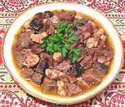
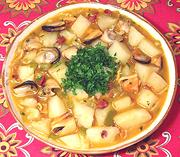
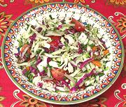
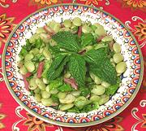

Variety Meat Stew
Sephardic
Mussel Stew [f]
Spain

Pumpkin & Chickpea Stew
Spain [v]
Cabbage & Watercress
Spain [v]
Lima Bean Salad [v]
Spain
|

Variety Meat Stew Sephardic |

Mussel Stew [f] Spain |
Pumpkin & Chickpea Stew Spain [v] |
|

Cabbage & Watercress Spain [v] |

Lima Bean Salad [v] Spain |